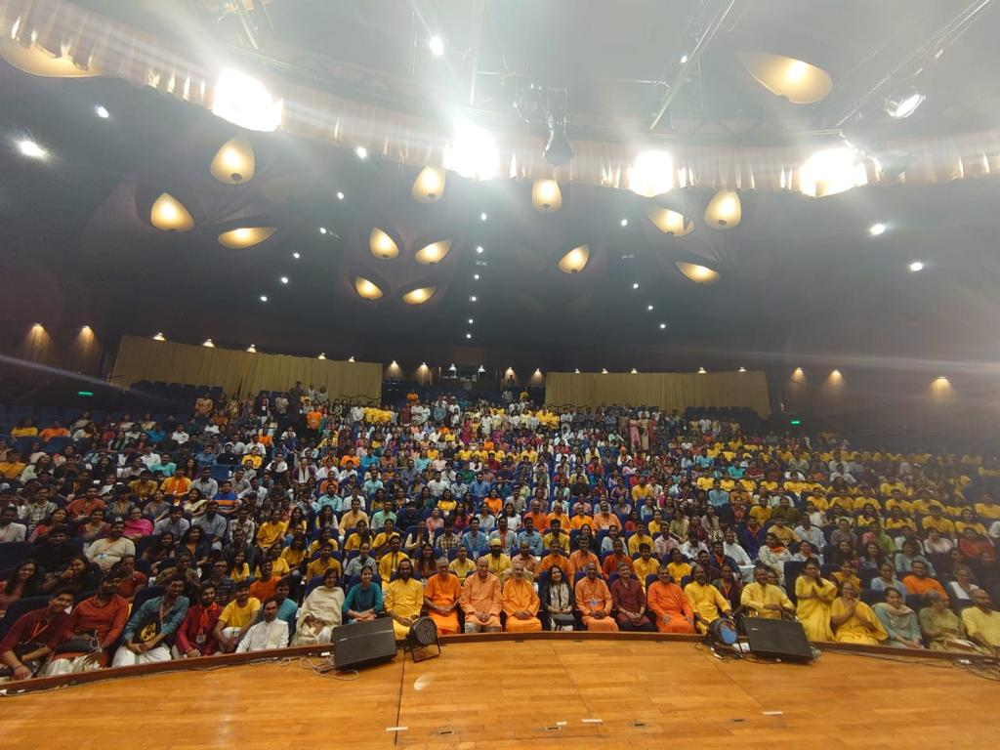
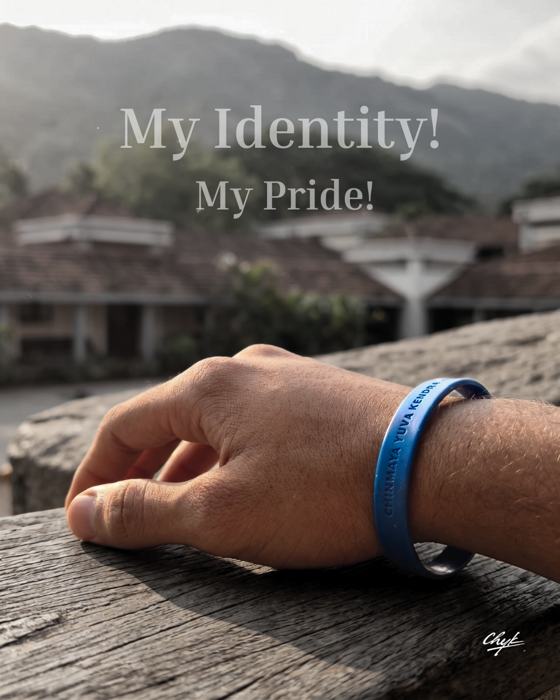
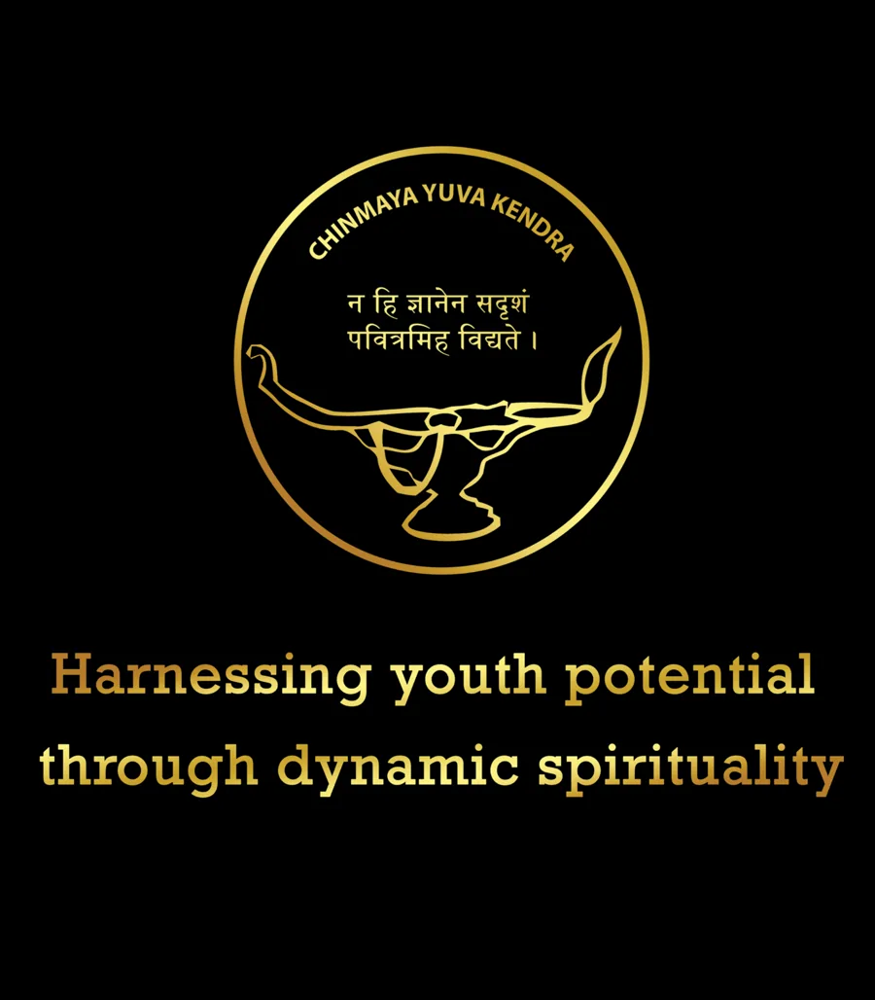
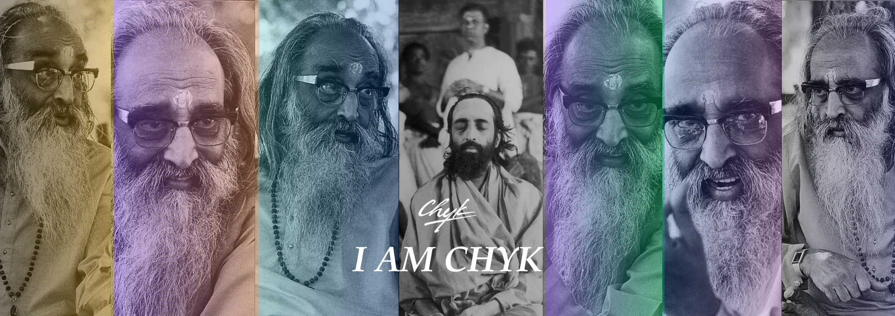

Who We Are
About
CHYK
Chinmaya Yuva Kendra (CHYK) is the youth wing of Chinmaya Mission, started by Pujya Gurudev Swami Chinmayananda in 1975. It is for youth between eighteen and twenty-eight years of age.

EST. 1975 — PresentWhat is CHYK
Chinmaya
Yuva Kendra
There is a moment in every young life when the world feels vast, and the self feels uncharted - that is exactly where you are meant to be. CHYK exists for that moment, and for you. We are a space where questions are welcomed, where restlessness finds direction, and where your deepest potential is gently called forward.
Here, spirituality is not a distant, intimidating ideal - it is simply the art of living beyond yourself, for something greater. It is the quiet power of giving without counting, of caring without condition, of acting without waiting for reward.
Every young person carries a light within them, often unseen by themselves - our work is simply to help you find it. Through inquiry, community, and purposeful action, we walk alongside you as you grow into who you were always meant to become. This is not just an organization. This is a homecoming.
Our Motto
युवकेन्द्रं धनुर्विद्यात् आत्मानं निशितं शरम् ।
आत्मलोकहितं लक्ष्यं शरवत् तन्मयो भवेत् ॥
Yuvakendram dhanurvidyat atmanam nishitam sharam
Atmalokahitam lakshyam sharavat tanmayo bhavet
Chinmaya Yuva Kendra, like the bow, is the means and not the end. The sharpened arrow symbolizes purity of mind and clarity of vision. While serving the world, one should first take care of one's self-unfoldment. After attaining Self-realization, do not forget the goal that should be reached. May you be one with the goal to serve one and all.
- Swami Tejomayananda
"CHYKs are now our only hope."
- Pujya Gurudev Swami Chinmayananda
Who Can Join
Age Groups
Young Seekers
Pre-CHYK is designed for teenagers aged 14 to 17 — a foundational programme that introduces Vedantic values, character development, and cultural awareness through age-appropriate activities, camps, and study circles.
Join Pre-CHYKYouth Wing
CHYK is for young adults aged 18 to 28 — the full Chinmaya Youth Kendra experience. Members engage in deep Vedantic study, national projects, CTCs, yatras, leadership training, and community service.
Join CHYKOur Symbol
The CHYK Emblem

This lamp is generally used in South Indian temples and ancient houses as a lantern to carry when going into darkness. It is light in transit. It is lit at the main lamp and the individual carries this light when going out. En route, it has less chance of dying when a sufficiently broad and thick wick is used. Against sudden gusts of wind, the flame is protected by a guarding palm.
The lamp has a wide container at its middle to carry oil, and the spoon on the chain feeds the wick from time to time. Let this lamp be our emblem for the Yuva Kendra. Let each one of you be a lamp lit at the main light at His Altar, with enough faith and devotion born out of study and knowledge to feed the mind that lights up the path with its incandescence.
You are all torch-bearers for the world, spreading the light of the Eternal Scriptures that you yourselves have studied and practised. This is the significance of this emblem.
- Swami Chinmayananda
The Spirit of CHYK
Gita Inspirations

Voices
What CHYKsters Say
Ready?
Start Your
Journey.
Join thousands of young seekers worldwide who are exploring Vedanta, building character, and finding themselves through CHYK.